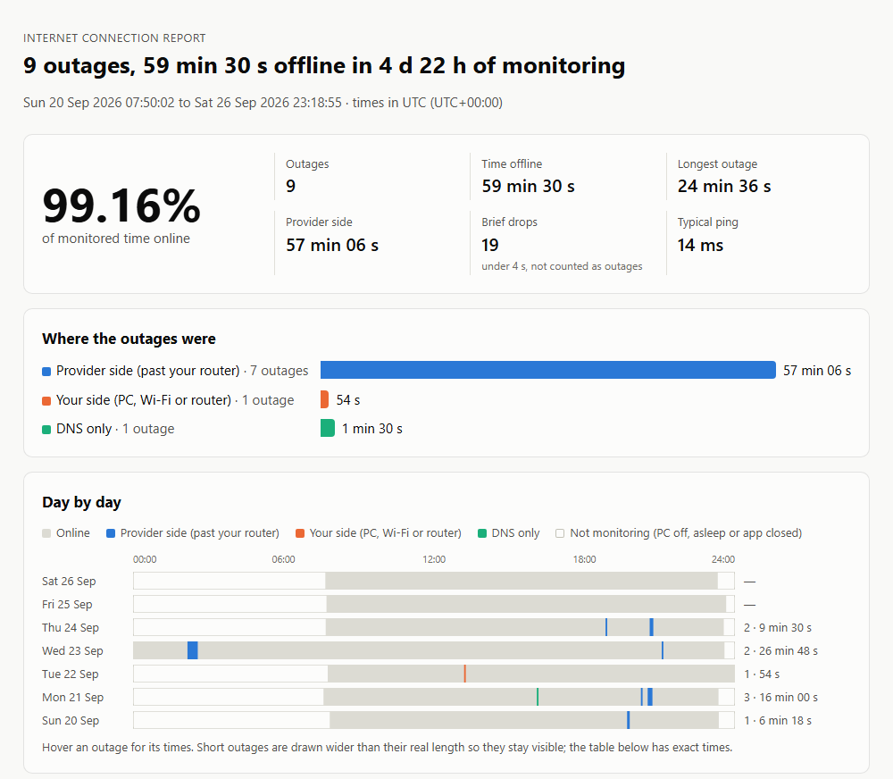
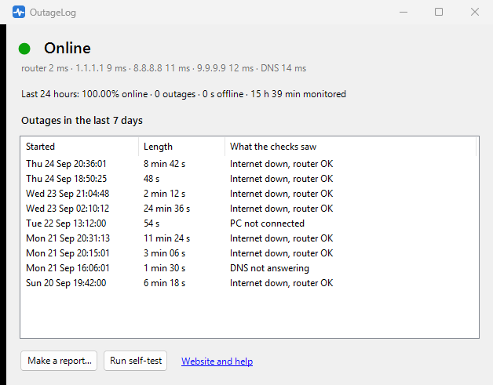

OutageLog is a free Windows tray app that checks your connection every 2 seconds, logs every outage, and tells your own Wi-Fi and router apart from your provider's line. When you call them, you send a report instead of saying "it happens a lot".

A report made from sample data. Open the full sample.
Every round, OutageLog checks three things at once. Which of them fail tells you where the break is.
| What the checks see | Verdict | Side |
|---|---|---|
| Router answers, none of the three internet servers do | Internet down, router OK | Provider: the line, modem or their network |
| Router stopped answering, internet too | Router not reachable | Yours: Wi-Fi, cable or router |
| PC has no network connection | PC not connected | Yours |
| Internet answers by IP, but names don't resolve | DNS not answering | DNS |
| Router never answers pings (some don't), internet down | Internet down | Can't tell |
An outage is 2 or more failed rounds in a row; a single failed round is counted as a brief drop instead. Time when the PC is off or asleep is left out, and reconnecting after wake-up isn't logged as an outage. Servers that block ping get a TCP connection attempt before they count as down.
One HTML file: availability, every outage with start time and length, a day-by-day timeline, typical and worst ping, and the outage table as CSV. It prints cleanly.
A quiet heads-up when an outage starts and when you're back, so you can note what you were doing.
Fakes a 20-second outage without touching your real connection, so you can watch it get detected. Self-tests stay out of the totals.
Every check is a line in a daily CSV in %LOCALAPPDATA%\OutageLog. Nothing leaves your PC except the checks.
Under 1 KB per round, about 1–2 MB an hour. The interval is adjustable for metered connections.
A single exe running on the .NET Framework built into Windows. MIT-licensed source, built and checksummed by GitHub Actions.
%LOCALAPPDATA%\OutageLog\.
Left-click the tray icon for live status and recent outages.
It gives you timestamps and a clear observation: at 20:31 your router answered and three independent internet servers didn't, for 11 minutes. That's usually what gets a technician to look at the line. It's still one PC's view, and your provider may run its own tests.
A cable, if you can. On Wi-Fi a weak signal shows up as "your side", never as "provider side", so the provider-side numbers stay trustworthy, but some real provider outages can hide behind Wi-Fi drops.
Your router doesn't answer pings, so OutageLog can't tell whether the break was before or after it. The times are still right.
Mostly, but with a full-tunnel VPN the "router" check may hit the VPN's gateway, and a VPN that drops looks like an outage. For evidence, turn the VPN off or exclude OutageLog from it.
Yes. It's your own record, not a certified measurement. The report explains how everything was measured so anyone can judge it.
PingPlotter is a commercial diagnostics suite. Net Uptime Monitor costs $9.95 and writes a plain-text log. Ping Tracer is free and open source and draws live latency graphs per network hop. OutageLog's whole job is an outage record that says which side each outage was on, turned into a report you can send.
"How do I prove my internet keeps dropping?" has been asked for over fifteen years, and the usual answer is ping -t into a text file.